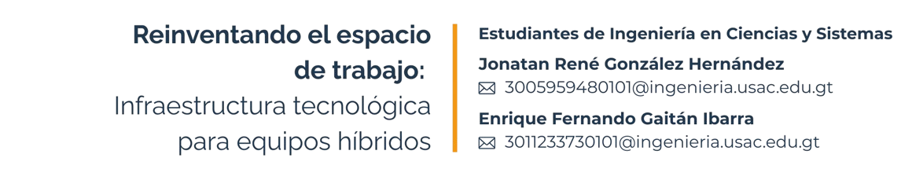
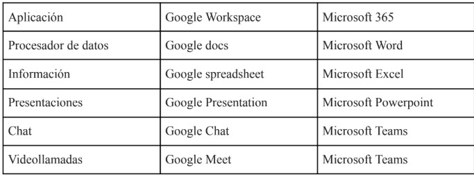

20 Reinventando el espacio de trabajo: infraestructura tecnológica para equipos híbridos

Palabras clave: Trabajos Híbridos, Comunicación fluida, soluciones basadas en la nube, automatización de procesos administrativos.
20.1 Introducción
En los últimos años, ha habido un cambio significativo en nuestra forma de trabajar. Todas las organizaciones implementaron el teletrabajo casi de manera repentina y si bien al principio pareció ser la solución ideal surgieron rápidamente ciertas inquietudes: ¿Es posible mantener la misma eficiencia laboral sin la estructura de la empresa física habitual? ¿Cómo se ve alterada la comunicación y el trabajo en equipo ante esta nueva realidad?.
Por estas razones, numerosas empresas seleccionaron el enfoque mixto, que otorga a los empleados la posibilidad de trabajar de modo remoto y en la oficina. Pero, para que esta modalidad cumpla el propósito que persigue no resulta suficiente la asignación de días para trabajar desde casa y de oficina. Para ello, es fundamental contar con una infraestructura que garantice la comunicación, el acceso a la información y las herramientas de gestión laboral. Sin estos elementos, el trabajo híbridose vuelve ineficaz.
20.2 Artículo
1 Conectividad y comunicación eficiente
Uno de los principales desafíos del trabajo híbrido es garantizar una comunicación fluida entre los equipos. Para ello, las empresas han implementado herramientas como Microsoft Teams, Slack y Zoom, que permiten mantener reuniones virtuales y una comunicación constante[1]. Sin una conexión estable y de calidad, la experiencia de trabajo híbrido puede verse afectada, reduciendo la productividad y generando frustración en los empleados.
Además, la integración de plataformas de mensajería con otras herramientas de gestión ayuda a centralizar la información y evitar la dispersión de datos. Según un estudio reciente, el uso de plataformas colaborativas ha incrementado la eficiencia en la gestión de equipos en un 35%[2].
2 Gestión de proyectos y productividad
El trabajo híbrido requiere soluciones tecnológicas que permitan la organización y gestión efectiva de tareas. Herramientas como Asana, Trello y Jira han ganado popularidad entre empresas que buscan optimizar la asignación de tareas y el seguimiento del trabajo[3].
Un informe de Tech.co señala que “la digitalización de la gestión de proyectos ha mejorado la transparencia y la asignación de responsabilidades en un 40% en comparación con los métodos tradicionales”[1]. La automatización de procesos administrativos y la capacidad de visualizar el progreso de los proyectos en tiempo real permite una toma de decisiones más ágil y fundamentada.
3 Seguridad y acceso a la información
El acceso seguro a la información es un aspecto clave en entornos híbridos. La implementación de redes VPN, autenticación multifactor (MFA) y herramientas de gestión de identidad y acceso (IAM) protege los datos de la empresa frente a ciberamenazas[3].
Empresas líderes han adoptado soluciones basadas en la nube como Google Workspace y Microsoft 365, que garantizan acceso seguro a documentos y aplicaciones desde cualquier ubicación. Según Virtual Space, “el 70% de las empresas que han migrado a soluciones en la nube reportan una mayor seguridad y menor riesgo de pérdida de datos”[2].

Figura 20.1: Cuadro comparativo entre aplicaciones de Google y Microsoft. Fuente: Elaboración propia
4 Espacios físicos adaptados al trabajo híbrido
La tecnología desempeña un papel fundamental en los entornos laborales modernos. Los espacios de trabajo han avanzado para incorporar salas de reuniones que cuentan con servicios inteligentes de pantalla, cámaras para videollamadas y sistemas para la reserva de escritorio. Según un estudio de Asana, la implementación de oficinas flexibles ha incrementado la satisfacción de los empleados en un 25%[3].
20.3 Conclusiones
El enfoque mixto de trabajo se ha consolidado como una tendencia duradera y su efectividad está estrechamente relacionada a la base tecnológica que lo respalda adecuadamente. Es crucial integrar herramientas de comunicación eficientes y seguras así como espacios adaptados a este modelo laboral para asegurar la productividad y una colaboración efectiva. Las compañías que invierten en tecnología adecuada pueden potenciar la satisfacción de sus trabajadores, estimular la creatividad y mantener su competitividad en un entorno laboral en constante cambio.
20.4 Referencias
[1] Cawley, Conor. “6 Ways Technology Has Changed Project Management.” Tech.co, 10 de mayo de 2023. tech.co
[2] Virtual Space. “The Importance of Project Management Tools for Your Business.” Virtual Space, 13 de junio de 2023. virtualspace.ai
[3] Raeuburn, Alicia. “Los 12 mejores software de gestión de proyectos en 2024.” Asana, 16 de febrero de 2024. asana.com